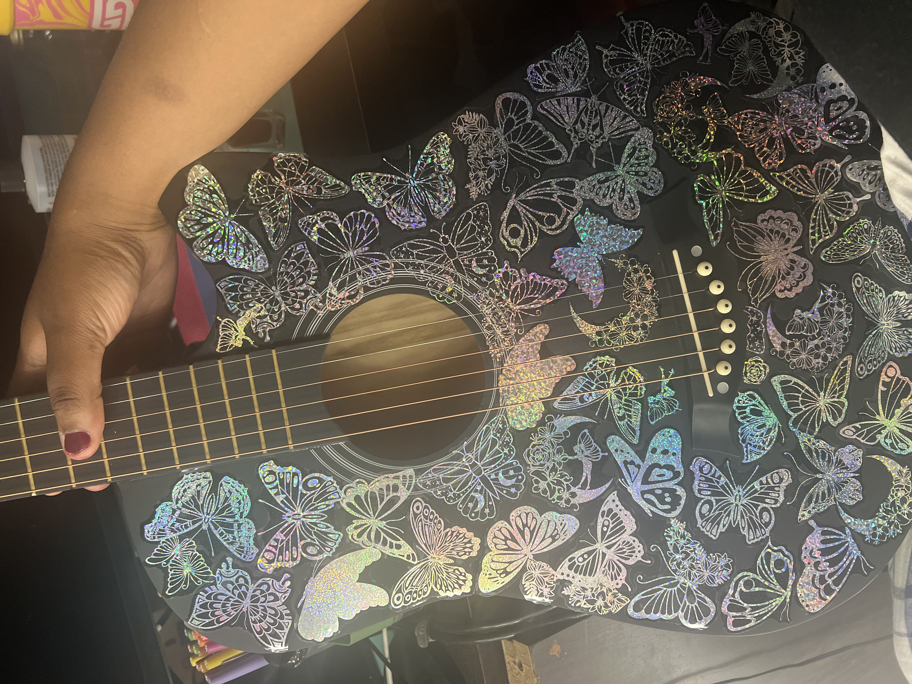
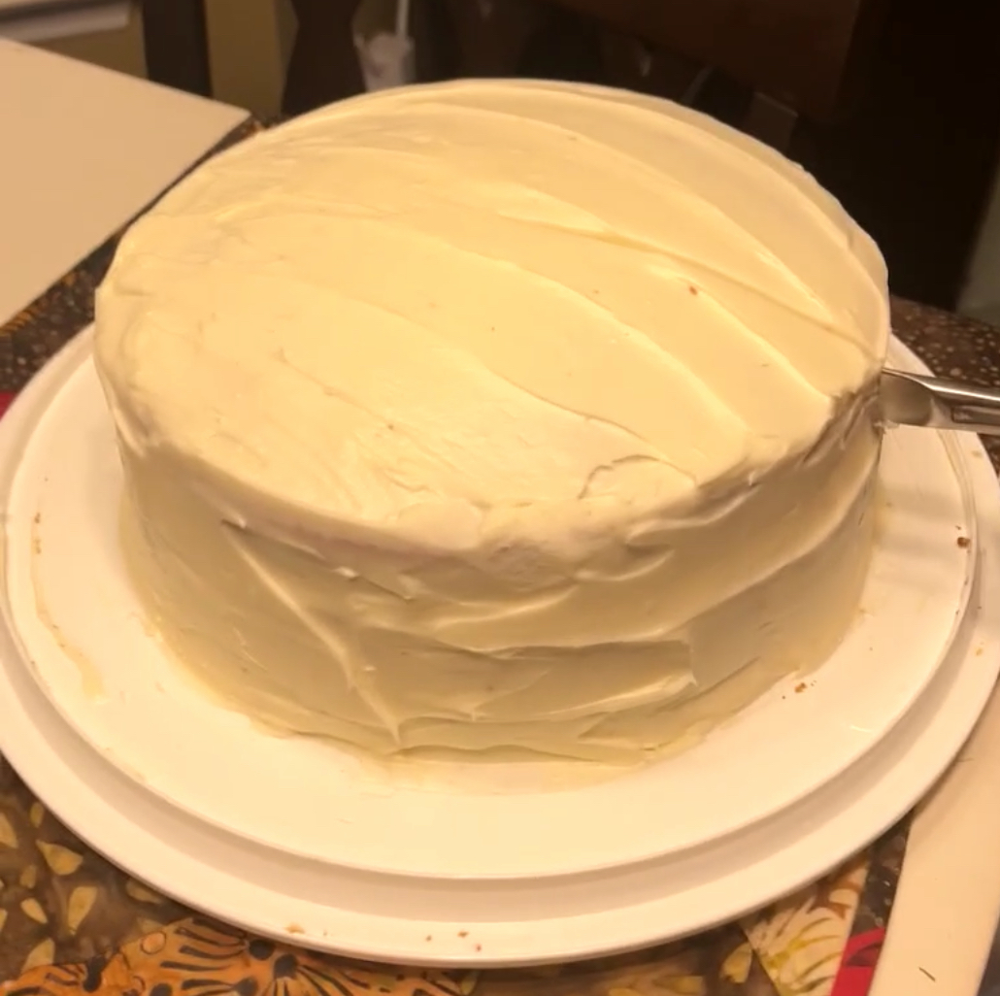
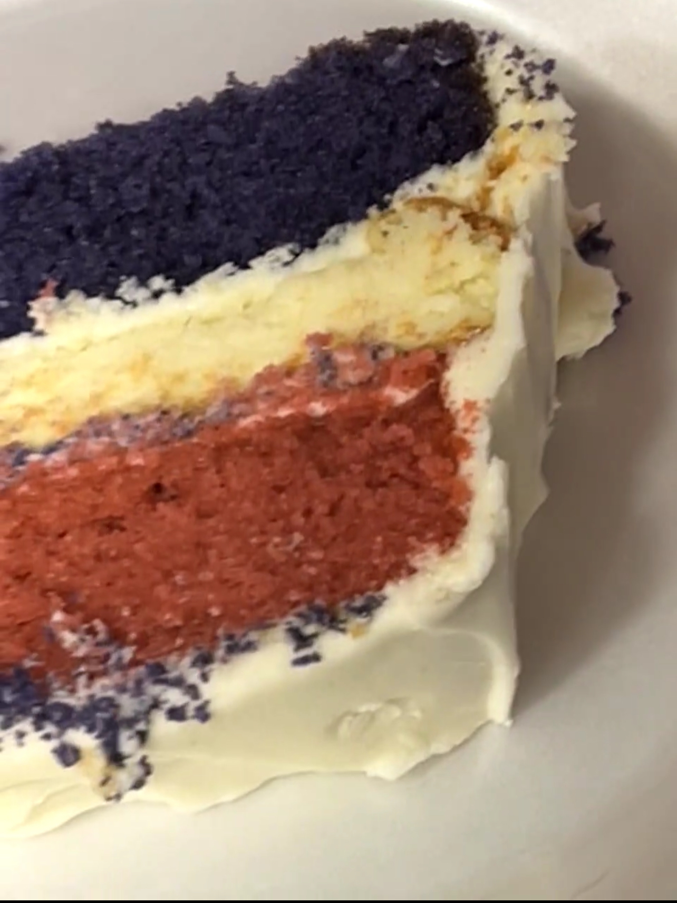
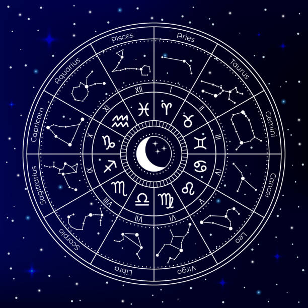

I have always loved music. At any given time, I’m either listening to music or singing along to a song in my head. I loved learning the recorder in elementary school so much that I decided to join chorus in the fourth grade. We once went on a field trip to sing the national anthem before a sporting event; I remember being incredibly nervous but it was such a fun time and I had a blast singing for the crowd. This is when I discovered my love of performing, however I’ve always been too shy to perform solo.Sometime in middle school, I received my first guitar as a Christmas present and I began learning guitar and I’ve been playing ever since. Years later, I switched to acoustic because I felt it suited me better. Playing my favorite songs and occasionally writing songs of my own has always been and will always be a necessary outlet for expressing myself and processing the hardships that are inevitable in life.

Baking has been one of my favorite activities for as long as I can remember! My first ever dream, actually, was to become a pastry chef and I wanted to attend Johnson and Wales University in Charlotte, NC. I eventually wanted to open my own bakery. My favorite class in school was Home Economics which led me to enroll in the ProStart program at my high school. That class was all about cooking which I loved! We learned different methods of cooking, about all the different cooking utensils and how to use them properly, how to measure ingredients, and we cooked... A LOT! Every class we made something different and it was the perfect combination of learning and having fun. We even went and worked in a couple restaurants and catered a couple events, which was stressful but also a very good insight into the industry I dreamed of working in! Whenever I look back on my high school years, those memories are the ones I hold closest to my heart. Part of the reason why I chose Dunkin Donuts as first job, was because I wanted the opportunity to bake and decorate donuts.
Nowadays, I bake much less frequently but it still brings me immense joy. It can be tedious at times but the harder you work towards something the more you can appreciate it. That, and it just makes me really happy to make things that the people I care about can enjoy. The only thing my family loves more than my mac and cheese is the red velvet cheesecake cake I make on holidays and special occasions. It consists of two layers of red velvet cake, with a cheesecake layer in the middle and a cream cheese frosting. It’s so delicious and my family begs me to make it for them anytime we have a get together.

Another passion I have is astrology. I’m no expert, but it’s something my best friends and I discuss frequently. I find it interesting how quick people are to dismiss something like astrology but are completely accepting of something as arbitrary as the time (Daylight Savings time, hello?!). Many are skeptical of things like astrology and tarot because they believe it has no basis but the more I’ve learned and researched into the subject, the more I see the validity in it. I do, however, understand where the skeptics are coming from because the majority of astrology related content (ie horoscopes, etc) is very surface level. People are under the impression that one’s sun sign is the only factor, but in reality, it goes much deeper than that. I began really getting into astrology and tarot during the pandemic because I wanted some extra insight into myself and my way of thinking. As dramatic as it sounds, deep diving into my birth chart gave me a clarity that I’ve never experienced before, and for that, I will be forever grateful.